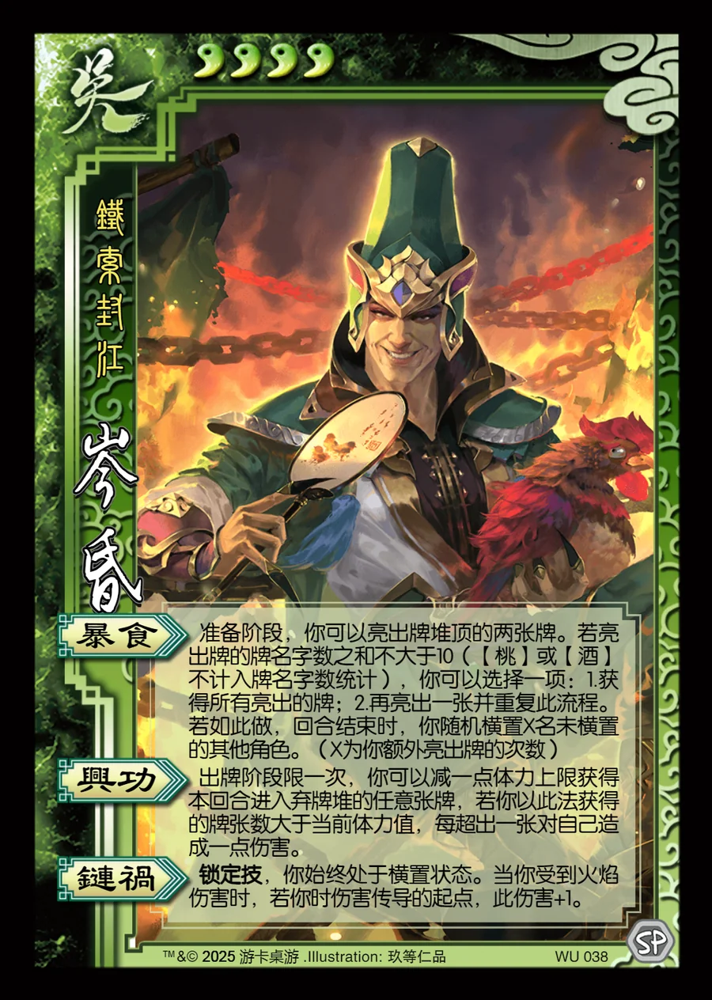

点击卡面查看大图
吴
岑昏
♥4铁索封江
暴食
准备阶段，你可以亮出牌堆顶的两张牌。若亮出牌的牌名字数之和不大于10（【桃】或【酒】不计入牌名字数统计），你可以选择一项：1.获得所有亮出的牌；2.再亮出一张并重复此流程。若如此做，回合结束时，你随机横置X名未横置的其他角色。（X为你额外亮出牌的次数）
兴功
出牌阶段限一次，你可以减一点体力上限获得本回合进入弃牌堆的任意张牌，若你以此法获得的牌张数大于当前体力值，每超出一张对自己造成一点伤害。
链祸锁定技
锁定技，你始终处于横置状态。当你受到火焰伤害时，若你时伤害传导的起点，此伤害+1。